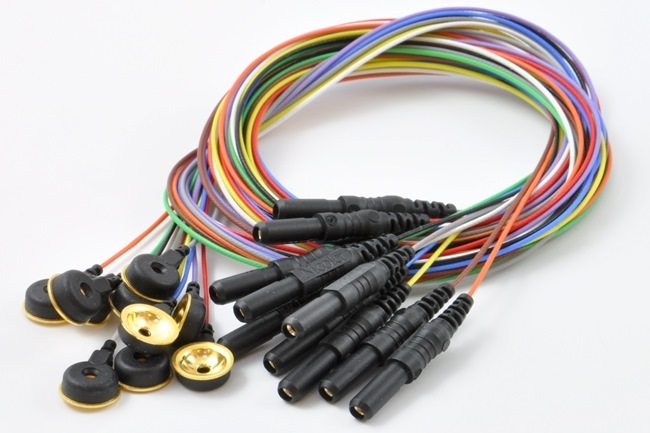

Capturing the EEG Signals
Two surface-skin EEG electrodes were used to obtain the analog EEG signal. The first was attached to the user's ear, and acted as our reference ground. The second signal electrode was positioned at the back of the head. These two electrodes gave us our input signal that we amplified, filtered, characterized and displayed.